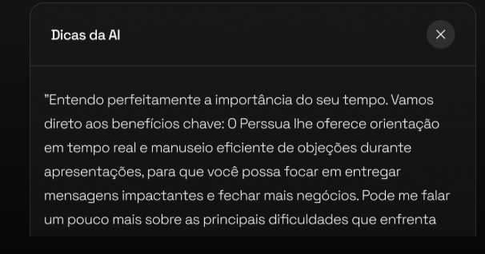
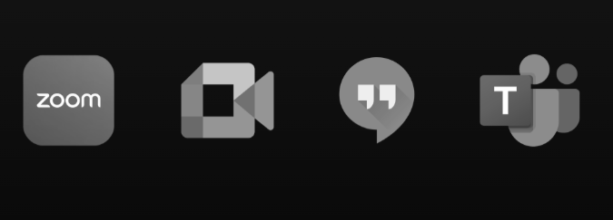

Desperte seu superpoder de persuasão em tempo real
Respostas instantâneas, gestão de objeções e integração perfeita em Zoom, Meet, Teams e Hangouts. Teste grátis!
Dicas da AI
x
“O Perssua lhe oferece orientação em tempo real e manuseio eficiente de objeções durante apresentações, para que você possa focar em entregar mensagens impactantes e fechar mais negócios. Pode me falar um pouco mais sobre as principais dificuldades que enfrenta com apresentações atualmente?”
Como Funciona
Domine qualquer situação com apoio em tempo real
Guia em Tempo Real
Enquanto você fala, Perssua ouve e sugere fatos, argumentos e respostas a perguntas difíceis.

Gestão de Objeções
Obtenha réplicas persuasivas e contextualizadas para manter o controle da conversa e fechar com autoridade.

Integração Instantânea
Funciona direto no Zoom, Google Meet, Microsoft Teams, Hangouts e outras plataformas. Sem instalações complicadas e sem aparecer no seu compartilhamento de tela.

Operação Discreta
Funciona em segundo plano e é completamente invisível no compartilhamento de tela: não aparece na sua transmissão nem exibe indicadores visíveis, analisando áudio e vídeo sem que seu público perceba, garantindo que você apresente sem distrações.
Aplicações
Para quem lidera, vende, entrevista ou apresenta
Profissionais de Vendas
Feche mais negócios ao responder objeções com dados e confiança.
Empreendedores
Apresente sua visão de forma convincente e conquiste investidores e clientes.
Executivos & Diretores
Conduza reuniões estratégicas com dados instantâneos ao seu alcance.
Entrevistadores
Formule perguntas de impacto e reaja a respostas imprevistas com sugestões de seguimento em tempo real.
Qualquer Apresentador
De entrevistas a conferências, eleve sua performance.
Funcionalidades
Venda mais, com menos esforço e mais impacto
Confiança Imbatível
Nunca fique sem resposta, fale com segurança total.
Produtividade Máxima
Economize horas automatizando follow-ups e respostas.
Vantagem Competitiva
Supere concorrentes com apresentações impecáveis e baseadas em IA.
Aperfeiçoamento Contínuo
Analise seu desempenho e melhore a cada apresentação.
Perguntas
Alguma dúvida? Aqui está a resposta
Ainda ficou com alguma dúvida? Mande um email para help@perssua.com
O download é gratuito?
keyboard_arrow_upSim, você pode baixar e testar gratuitamente. Assinatura é oferecida dentro do aplicativo caso decida utilizar no seu dia a dia.
Qual idioma o aplicativo utiliza?
keyboard_arrow_upO aplicativo está disponível em português e inglês. Você pode alternar entre idiomas nas configurações.
Ele é indetectavel?
keyboard_arrow_upSim, o aplicativo é totalmente indetectável durante compartilhamentos de tela pois funciona em um nível de sistema que não é capturado pelas ferramentas de videoconferência.
Voces tem suporte?
keyboard_arrow_upSim, oferecemos suporte por email e chat, com tempo de resposta médio de 24 horas para todos os usuários.
O aplicativo funciona no zoom?
keyboard_arrow_upSim! O aplicativo funciona perfeitamente com Zoom, Microsoft Teams, Google Meet, Hangouts e praticamente qualquer plataforma de videoconferência.
O app armazena as minhas conversas?
keyboard_arrow_upPor padrão, nenhuma conversa é armazenada. Você pode optar por salvar certas sessões localmente para análise posterior, mas isso é totalmente opcional e controlado por você.
O app tem acesso ás minhas chaves api?
keyboard_arrow_upO aplicativo permite que você use suas próprias chaves de API para serviços como OpenAI, Claude, ou outros, garantindo que você mantenha total controle sobre seus limites de uso e custos.
Pronto para dominar suas apresentações?
Transforme cada reunião em um espetáculo de clareza e persuasão com Perssua. Teste grátis agora mesmo: